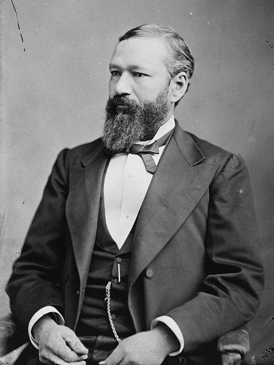

The Road to Segregation: Historical Context
Reconstruction and Its Aftermath
Following the Civil War, the Reconstruction Era brought hope for racial equality. The Thirteenth Amendment abolished slavery in 1865, the Fourteenth Amendment granted citizenship and equal protection in 1868, and the Fifteenth Amendment protected voting rights in 1870. These constitutional changes promised a new America where race would not determine one's legal rights or opportunities.
However, this progress proved short-lived. As federal troops withdrew from the South in 1877, white supremacist governments regained power. Southern states began passing laws designed to strip African Americans of their newly won rights and enforce racial separation in every aspect of public life. These laws became known as Jim Crow legislation, named after a derogatory minstrel show character.
Plessy v. Ferguson: The Legal Foundation of Segregation
Image: The Advocate
In 1892, Homer Plessy, a man of mixed race, deliberately violated Louisiana's Separate Car Act by sitting in a whites-only railroad car. His arrest was part of a carefully planned challenge to segregation laws organized by civil rights activists. The case reached the Supreme Court in 1896.
The Court's decision in Plessy v. Ferguson proved devastating for racial equality. In a seven-to-one ruling, the justices declared that segregation did not violate the Fourteenth Amendment's Equal Protection Clause as long as the separate facilities were equal. This "separate but equal" doctrine provided constitutional justification for racial segregation throughout the nation.
"If one race be inferior to the other socially, the Constitution of the United States cannot put them upon the same plane." Justice Henry Billings Brown, Plessy v. Ferguson majority opinion, 1896
Supreme Court Opinion, 163 U.S. 537 (1896)
Justice John Marshall Harlan issued a powerful dissent, arguing that the Constitution was color-blind and that segregation laws violated the principle of equal citizenship. His prophetic words warned that the decision would prove as harmful as the Dred Scott case, but his colleagues rejected this view. For nearly sixty years, Plessy remained the law of the land.
The Reality of "Separate but Equal"
The promise of equality under segregation was a legal fiction. Southern states systematically underfunded Black schools, parks, hospitals, and other public facilities. African American students attended overcrowded schools in dilapidated buildings with outdated textbooks and poorly paid teachers. Some rural Black schools operated only a few months each year because children were needed for farm work.
Photo: Getty Images
Photo: Getty Images
Statistics revealed the inequality. In South Carolina during the early 1950s, the state spent approximately three times more per white student than per Black student. School buildings for white children had modern facilities, while many Black schools lacked indoor plumbing or adequate heating. Transportation further illustrated the disparity: white students rode buses to school while Black children often walked miles, even when buses passed them by.
The Jim Crow System
Segregation extended far beyond schools. Jim Crow laws mandated separate water fountains, restrooms, waiting rooms, restaurants, hotels, and transportation. African Americans faced humiliating restrictions on where they could sit, stand, eat, or sleep. These laws reinforced a system of white supremacy that kept Black Americans as second-class citizens in their own country.
Violence and intimidation enforced these laws. The Ku Klux Klan and similar groups used terrorism to prevent Black political participation and maintain racial hierarchy. Lynchings, beatings, and economic retaliation awaited those who challenged segregation. This atmosphere of fear made it extraordinarily dangerous to fight for civil rights.
Early Challenges to Segregation
Despite the risks, African Americans never stopped resisting segregation. The National Association for the Advancement of Colored People, founded in 1909, developed a legal strategy to challenge discrimination. Led by attorneys like Charles Hamilton Houston and Thurgood Marshall, the NAACP began filing lawsuits targeting segregation in graduate and professional schools, where the inequality was most obvious.
These early victories laid groundwork for Brown. In Missouri ex rel. Gaines v. Canada in 1938, the Supreme Court ruled that Missouri must provide legal education for Black students within the state rather than paying for them to attend school elsewhere. In Sweatt v. Painter in 1950, the Court found that a makeshift Black law school in Texas could not provide an education equal to the University of Texas Law School. These decisions began undermining the "separate but equal" doctrine.
Timeline of Segregation
- 1865-1870: Reconstruction Amendments promise equality
- 1877: Reconstruction ends; Jim Crow laws begin
- 1896: Plessy v. Ferguson establishes "separate but equal"
- 1909: NAACP founded to fight discrimination
- 1938: Missouri ex rel. Gaines begins challenging segregation
- 1950: Sweatt v. Painter further weakens Plessy
- 1951: Briggs v. Elliott and other cases filed
By 1951, when Oliver Brown filed his lawsuit in Topeka, the stage was set for a direct challenge to segregation in public schools. The legal precedents, social science research, and moral arguments all pointed toward one conclusion: separate could never be equal.